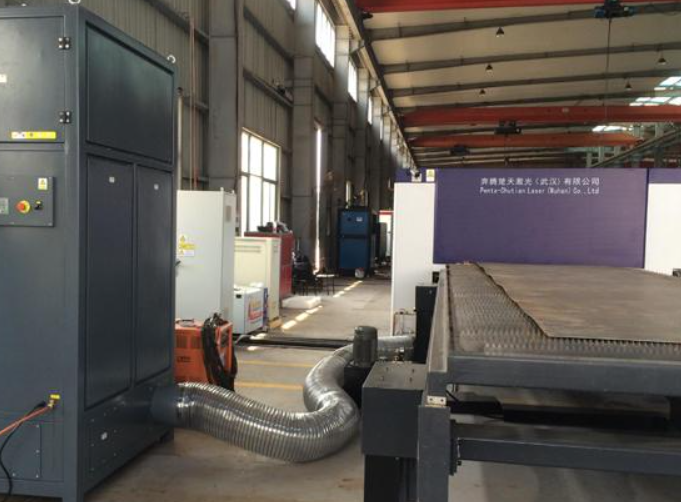
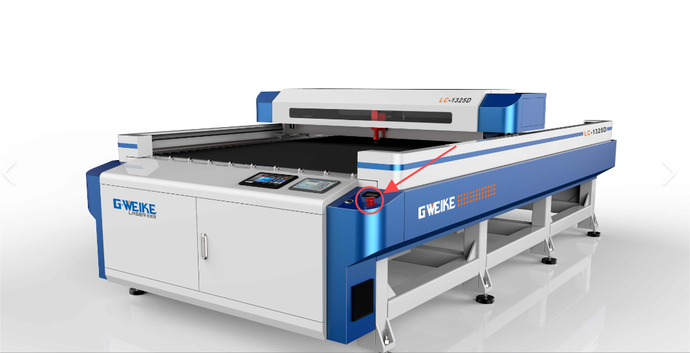
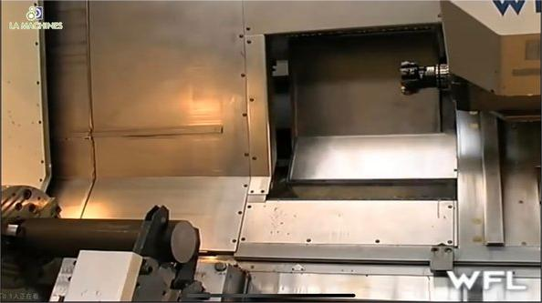
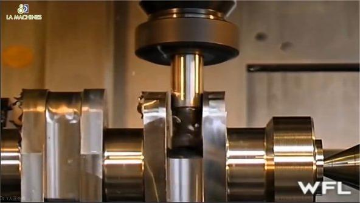

Eye protection: The laser cutting process will produce a strong light beam, the operator must wear special laser
protective glasses to prevent eye injury.
Protection wavelength:
200-450nm (UV, violet, Blue)
800-2000nm (Infrared)
1064nm (Fiber laser marking machine wavelength)


the beam generated by laser cutting and the splashing molten material may cause damage to the skin, and the operator
should wear appropriate protective clothing.
to operate in a well-ventilated environment to reduce the inhalation of harmful fumes and gases.
Ensure that the emergency stop switch is equipped to stop in time in case of special danger.


1: Corrosion resistance: SUS890L has good resistance to chloride stress corrosion cracking (SCC), as well as
excellent resistance to pitting and crevice corrosion, which makes it perform well in harsh chemical
environments.
2: High temperature strength: This material can still maintain high strength and good mechanical properties at
high temperatures, suitable for high temperature working environment.
3: Processing performance: SUS890L has good malleability and weldability, which is easy to process and manufacture.
1: Adjustment of cutting parameters: including cutting height, nozzle type, focus position, cutting power, cutting
duty ratio, cutting pressure and cutting speed. The reasonable setting of these parameters is very important to
ensure the cutting quality and efficiency.
2: Inspection of hardware conditions: including protective lenses, gas purity, plate quality, aggregation mirrors and
collimators. The state of these hardware conditions directly affects the effect and safety of laser cutting.
3: Problem solving in the cutting process: For example, hanging slag occurs during cutting, and cutting parameters
may need to be adjusted or the nozzle replaced. If the cut section is not bright or rough enough, it may be necessary
to improve the quality of the plate or improve the purity of the gas.
4: The use of auxiliary gases: In the laser cutting process, the use of auxiliary gases such as nitrogen, oxygen
or compressed air can help improve cutting quality and efficiency. Nitrogen is one of the commonly used auxiliary
gases because it can prevent the oxidation of the material and obtain the ideal cutting effect.
The moving parts of CNC machine tools may cause splint injuries or other physical injuries, and the operator
should follow the safety procedures during operation.
replace or treat cutting fluid regularly to prevent deterioration and harmful substances.

First, design a 3D model of the part using computer aided design (CAD) software.
According to the CAD model, use computer aided manufacturing (CAM) software to generate the machining program
required for CNC machine tools.
Fix the stainless steel sheet on the work table of the CNC machine.
Select the appropriate tool and install it on the spindle of the CNC machine according to the machining needs.
Start CNC machine tool and automatically execute milling, drilling and other processing steps according to CAM
program.

After processing, check the size and surface quality of the parts.

Due to the high hardness of stainless steel, carbide tools are usually used in CNC machining to improve cutting
efficiency and tool life.